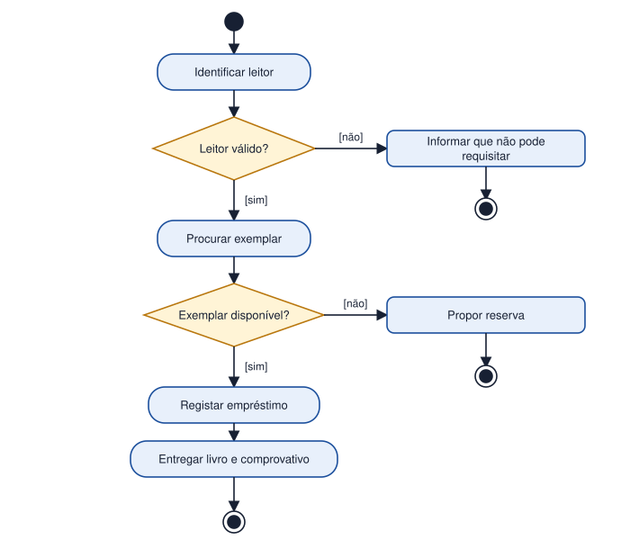

Tema 22 · UML e modelação do comportamento
Diagramas de atividade
Estados, ações, decisões, condições e fluxos alternativos
O diagrama de atividade representa o fluxo de um processo: as ações, a ordem por que se realizam e as decisões que alteram o percurso. É parecido com um fluxograma, mas com símbolos normalizados e com capacidade de mostrar atividades paralelas.
| Elemento | Símbolo | Significado |
|---|---|---|
| Nó inicial | Círculo preenchido | Onde o processo começa. |
| Ação / atividade | Retângulo de cantos arredondados | Um passo do processo («Registar empréstimo»). |
| Fluxo | Seta | Passagem de uma ação à seguinte. |
| Decisão | Losango | Escolha de caminho, com condições entre parênteses retos: [sim], [não]. |
| Bifurcação e junção | Barra | Início e fim de atividades em paralelo. |
| Nó final | Círculo com anel | Fim do processo. |
| Partição (swimlane) | Faixas verticais | Indica quem faz cada ação (Leitor, Bibliotecário, Sistema). |
Como construir
- Definir o processo e o seu início e fim.
- Listar as ações pela ordem normal de execução.
- Identificar as decisões e os fluxos alternativos (o que acontece quando algo falha).
- Garantir que cada caminho chega a um nó final.
Todos os caminhos de uma decisão têm uma condição. Se a condição for «senão», pode ser escrita como [não].
Atividade
Representar o processo de empréstimo de um livro através de um diagrama de atividade
Represente, com um diagrama de atividade, o processo de empréstimo de um livro. Considere que o sistema deve: identificar o leitor, verificar se o leitor pode requisitar, procurar o exemplar, verificar a disponibilidade, e, se estiver tudo correto, registar o empréstimo e entregar o livro com comprovativo. Preveja os fluxos alternativos.
Ver proposta de resolução

O diagrama apresenta dois fluxos alternativos: se o leitor não é válido, o processo termina com uma informação ao leitor; se o exemplar não está disponível, propõe-se uma reserva. O fluxo normal conclui com o registo e a entrega do livro.
Em resumo
- O diagrama de atividade representa o fluxo de um processo.
- Usa nós inicial e final, ações, decisões, bifurcações e partições.
- Os fluxos alternativos devem estar previstos e chegar a um nó final.